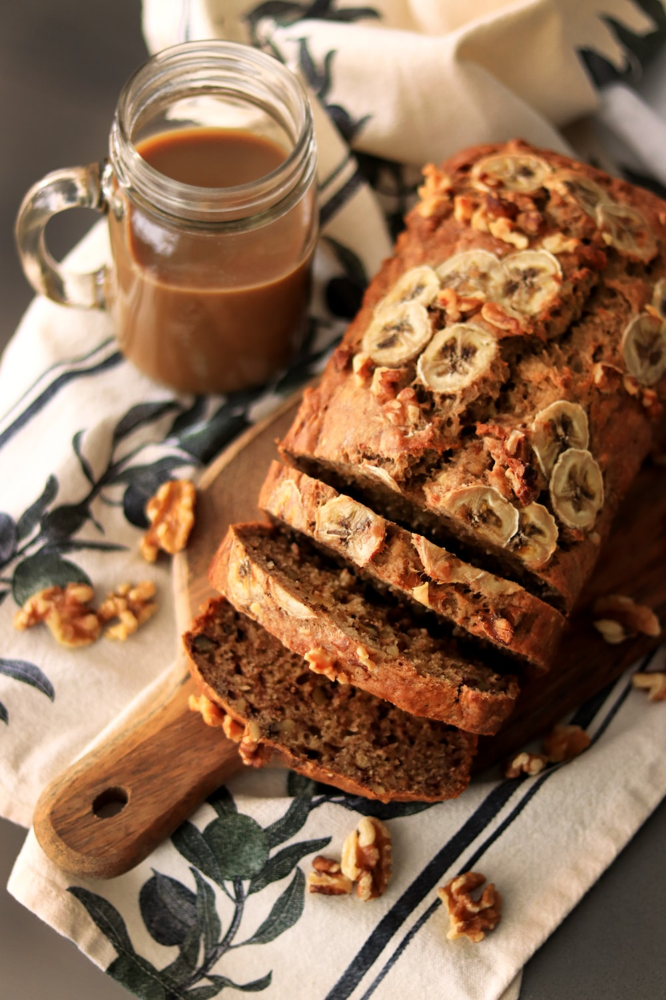

Banana Bread

Description
This delicious, vegan, sugar-free banana bread can be made by anyone.
In spite of its lack of sugar, it is wonderfully sweet and no one would guess that it were made using artifical sweetener.
Ingredients:
- 3 ripe bananas
- 1 cup Natreen sweetener
- 1 1/2 teaspoons baking powder
- 1/2 teaspoon baking soda
- 50 ml sunflower oil
- 175 grams of flour
- 2 teaspoons of cinnamon
- dash of salt
Steps:
- Preheat oven to 175 degrees celcius.
- Lightly oil the baking tin.
- Mash two of the bananas and mix them with the oil and sweetener.
- In another bowl, mix the flour, baking powder, baking soda, cinnamon, and salt.
- Slowly mix the dry mixture into the liquid.
- Add into the baking tin.
- Slice the remaining banana atop the dough.
- Let bake roughly 25 minutes until a toothpick comes out clean.